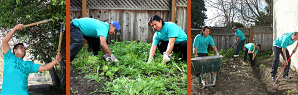

![[Empowering Others Quote]](../images/empowering_others.png)
Gardening Services
The Day Worker Center of Mountain View offers you same-day, reliable, safe gardeners for any gardening/yard work job, large or small, including yard cleanup, planting, garden maintenance, picking fruit, and cleaning gutters. Employers provide the gardening supplies and equipment.
"I have hired workers from the center at least monthly for more than 10 years. I have never had a single problem with anyone and I do not worry about them coming in my yard or in my home. All the workers have been courteous and appreciative of the chance to work. I have hired workers to garden, dig holes, spread mulch, pull weeds, paint, clean, sweep, pick up branches, move heavy items, patch plaster, split wood, etc. Maria runs the Center in a very professional way and they always call me back to see if I was satisfied."
About Our Workers
All workers fill out applications and go into our database. The Center calls every employer to request an evaluation and tracks each worker's performance. They are reliable workers, ready to serve.
About the DWCMV
We are a fourteen-year-old non-profit agency that matches employers with temporary workers in an environment that is safe and dignified for both. The DWCMV is the 2009 Non Profit Organization of the Year of the Mountain View Chamber of Commerce and recipient of the 2008 Mayor's Award of Mountain View, as well as many other honors, and a member of the Chamber of Commerce.
CALL US TODAY: (650) 903-4102
